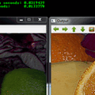
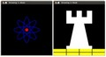
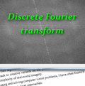
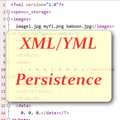
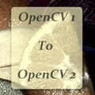

core module. The Core Functionality¶
Here you will learn the about the basic building blocks of the library. A must read and know for understanding how to manipulate the images on a pixel level.
Title: Mat - The Basic Image Container
Compatibility: > OpenCV 2.0
Author: Bernát Gábor
You will learn how to store images in the memory and how to print out their content to the console.
Title: How to scan images, lookup tables and time measurement with OpenCV
Compatibility: > OpenCV 2.0
Author: Bernát Gábor
You’ll find out how to scan images (go through each of the image pixels) with OpenCV. Bonus: time measurement with OpenCV.
 Title: Mask operations on matrices
Compatibility: > OpenCV 2.0
Author: Bernát Gábor
You’ll find out how to scan images with neighbor access and use the filter2D function to apply kernel filters on images.
Title: Adding (blending) two images using OpenCV
Compatibility: > OpenCV 2.0
Author: Ana Huamán
We will learn how to blend two images!
Title: Changing the contrast and brightness of an image!
Compatibility: > OpenCV 2.0
Author: Ana Huamán
We will learn how to change our image appearance!
 Title: Basic Drawing
Compatibility: > OpenCV 2.0
Author: Ana Huamán
We will learn how to draw simple geometry with OpenCV!
Title: Random generator and text with OpenCV
Compatibility: > OpenCV 2.0
Author: Ana Huamán
We will draw some fancy-looking stuff using OpenCV!
 Title: Discrete Fourier Transform
Compatibility: > OpenCV 2.0
Author: Bernát Gábor
You will see how and why use the Discrete Fourier transformation with OpenCV.
 Title: File Input and Output using XML and YAML files
Compatibility: > OpenCV 2.0
Author: Bernát Gábor
You will see how to use the FileStorage data structure of OpenCV to write and read data to XML or YAML file format.
 Title: Interoperability with OpenCV 1
Compatibility: > OpenCV 2.0
Author: Bernát Gábor
Did you used OpenCV before its 2.0 version? Do you wanna know what happened with your library with 2.0? Don’t you know how to convert your old OpenCV programs to the new C++ interface? Look here to shed light on all this questions.
{kind=link}
{kind=link}
{kind=link}
{kind=link}
{kind=link}
{kind=link}
{kind=link}
{kind=link}
{kind=link}
{kind=link}
Help and Feedback
You did not find what you were looking for?- Ask a question on the Q&A forum.
- If you think something is missing or wrong in the documentation, please file a bug report.

Previous topic
How to write a tutorial for OpenCV
Next topic
Mat - The Basic Image Container